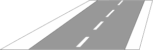

Zeichen 340
Leitlinie

13 Tatbestände dazu
107124Sie benutzten auf der Fahrbahn mit für beide Richtungen drei oder fünf durch Leitlinien (Zeichen 340) markierten Fahrstreifen den mittleren zum Überholen.
30 €
107130
Sie benutzten auf der Fahrbahn mit für beide Richtungen vier durch Leitlinien (Zeichen 340) markierten Fahrstreifen einen der beiden in Fahrtrichtung linken, ausschließlich dem Gegenverkehr vorbehaltenen, zum Überholen.
30 €
107136
Sie benutzten auf der Fahrbahn mit für beide Richtungen sechs durch Leitlinien (Zeichen 340) markierten Fahrstreifen einen der drei in Fahrtrichtung linken, ausschließlich dem Gegenverkehr vorbehaltenen, zum Überholen.
30 €
107600
Sie benutzten auf der Fahrbahn mit für beide Richtungen drei oder fünf durch Leitlinien (Zeichen 340) markierten Fahrstreifen den mittleren zum Überholen und gefährdeten +) dadurch Andere.
40 €
107601
Sie benutzten auf der Fahrbahn mit für beide Richtungen drei oder fünf durch Leitlinien (Zeichen 340) markierten Fahrstreifen den mittleren zum Überholen. Es kam zum Unfall.
50 €
107606
Sie benutzten auf der Fahrbahn mit für beide Richtungen vier durch Leitlinien (Zeichen 340) markierten Fahrstreifen einen der beiden in Fahrtrichtung linken, ausschließlich dem Gegenverkehr vorbehaltenen, zum Überholen. Sie gefährdeten +) dadurch Andere.
40 €
107607
Sie benutzten auf der Fahrbahn mit für beide Richtungen vier durch Leitlinien (Zeichen 340) markierten Fahrstreifen einen der beiden in Fahrtrichtung linken, ausschließlich dem Gegenverkehr vorbehaltenen, zum Überholen. Es kam zum Unfall.
50 €
107612
Sie benutzten auf der Fahrbahn mit für beide Richtungen sechs durch Leitlinien (Zeichen 340) markierten Fahrstreifen einen der drei in Fahrtrichtung linken, ausschließlich dem Gegenverkehr vorbehaltenen, zum Überholen. Sie gefährdeten +) dadurch Andere.
40 €
107613
Sie benutzten auf der Fahrbahn mit für beide Richtungen sechs durch Leitlinien (Zeichen 340) markierten Fahrstreifen einen der drei in Fahrtrichtung linken, ausschließlich dem Gegenverkehr vorbehaltenen, zum Überholen. Es kam zum Unfall.
50 €
142170
Sie hielten verbotswidrig auf einem Schutzstreifen für den Radverkehr (Zeichen 340).
55 €
142671
Sie hielten verbotswidrig auf einem Schutzstreifen für den Radverkehr (Zeichen 340) und behinderten +) dadurch Andere.
70 €1 PunktB-Verstoß
142672
Sie hielten verbotswidrig auf einem Schutzstreifen für den Radverkehr (Zeichen 340) und gefährdeten +) dadurch Andere.
80 €1 PunktB-Verstoß
142673
Sie hielten verbotswidrig auf einem Schutzstreifen für den Radverkehr (Zeichen 340). Es kam zum Unfall.
100 €1 PunktB-Verstoß